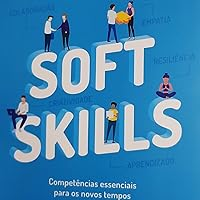

Soft Skills

- O que é soft skill?
- Quais são as principais soft skills?
Os principais soft skills são:
- comunicação assertiva;
- resiliência;
- inteligência emocional;
- ética de trabalho;
- habilidade de solucionar problemas;
- trabalho em equipe.
- Comunicação assertiva
- é uma das principais soft skills para evitar a falta de comunicação interna
- Solução de problemas
- Indivíduos que conseguem resolver problemas de forma ágil e eficaz são muito valorizados pelas empresas.
Considerados criativos, profissionais com esse exemplo de soft skill estão prontos para se adequar a uma cultura de inovação.
- Gerenciamento de tempo
- O gerenciamento do tempo, ou gestão do tempo,
é a habilidade de conseguir organizar e planejar as atividades diárias (profissionais ou pessoais) com o objetivo de obter mais produtividade e eficiência.
- Gestão de conflitos
- A gestão ou resolução de conflitos é um exemplo de soft skill que requer algumas outras habilidades, como a empatia que já citamos, mas também humildade e objetividade.